Windows Azure Plugin for Eclipse with JavaとPlay Framework 2.1
Pyay Framework 2.1のアプリを作ってWindows AzureにDeployするまでを簡単に流します。Java, Play Frameworkに付いてある程度知識があって、Windows Azureを使ってみようという人を前提としています。
必要環境
確認は下記の環境で行いました。
- Windows 8
- Java Developer Kit (JDK), v1.7
- Eclipse IDE for Java EE Developers Kepler
- Windows Azure SDK 2.1
- Play Framework 2.1
Windows Azure Plugin for Eclipse with JavaとPlay Framework 2.1の開発環境としては、JDKは1.6以降、Eclipseは、 Indigo 以降がサポートされています。Windows Azure SDKは最新（2.1）が必要です。Play Frameworkに関しては2.1.5で試しましたが、他のバージョンとの互換性は確認していません。
Windows Azure SDK 2.1のインストール
Windows Azure SDK 2.1は、Web Platform Installer 4.6経由で入れるのがお勧めです。少し慣れないと分かりづらいので説明します。
Web Platform Installerを起動して、右上の検索ボックス①に azure sdk 2.1 と入力して改行すると検索結果が表示されます。その中の Windows Azure SDK 2.1 ② を「インストールする」して下さい。（画面はインストール後になってしまっているのですが、右端のインストールボタンを押すとインストール候補として選択されます）Visual Studio用のツールなど複数表示されますが、今回必要なのは、 Windows Azure SDK 2.1 だけです。
画面下の「インストール」ボタン③を押すと処理が始まります、この時に必要な依存関係も同時にインストールされます。
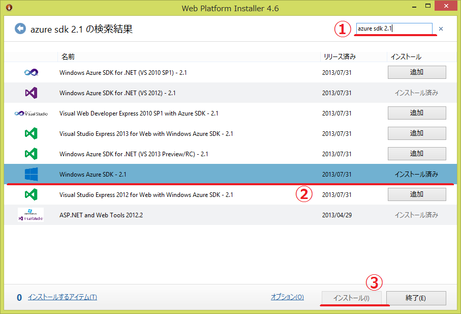- Web Platform Installer 4.6 は、 Microsoft Web Platform Installer 4.6 からインストールできます。
もっと簡単な方法
This plugin requires Windows Azure SDK 2.1. This can be downloaded using the Web Platform Installer (WebPI) 経由で Windows Azure SDK 2.1 をインストールするplugin(exe)も配布されています。 http://go.microsoft.com/fwlink/?LinkID=252838 このリンク先さからダウンロードされるEXEを起動するとSDKのインストールが自動的に始まります。どちらの方法でインストールしても同じものが入ります。
Windows Azure Plugin for Eclipse with Java (by Microsoft Open Technologies)
次に、Microsoft Open Technologiesが作っている Windows Azure Plugin for Eclipse with Java を入れます。現在(2013/10/15)の最新版は、2.1.1です。 プラグインのインストールは、通常のものと同じに、Help メニューのInstall New Softwareから行います。
レポジトリとして、 http://dl.msopentech.com/eclipse を追加すると、 Windows Azure Toolkit for Java が表示されます。
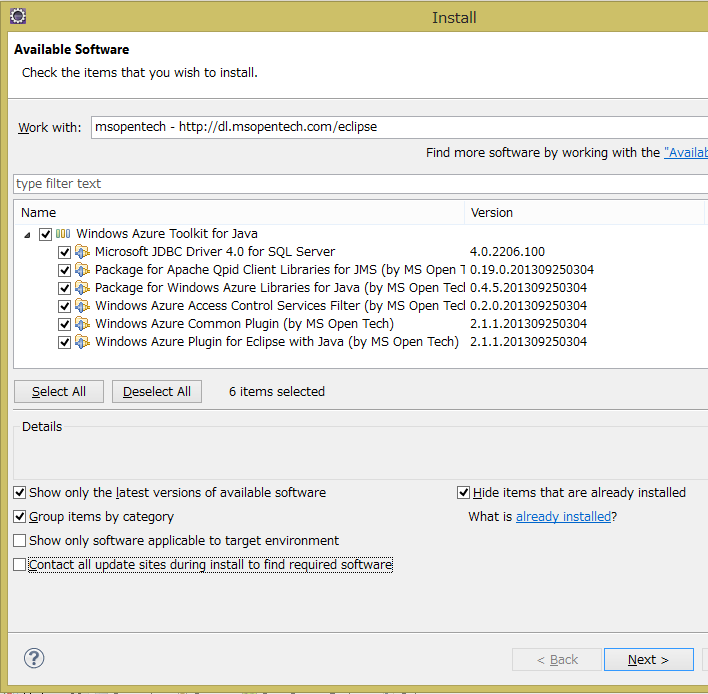必要に応じてライブラリを選択してください。今回はとりあえず、全部選択します。
サポートされているライブラリの種類
Windows Azure Plugin for Eclipse with Javaが、EclipseのUIとツールを提供するもので、その他のものはAzureのAPIをラップしたクラスライブラリです。
- Microsoft JDBC Driver 4.0 for SQL Server: SQL Database 用のコンポーネント
- Package for Apache Qpid Client Libraries for JMS (by MS Open Tech): Azureのメッセージングサービス向けのJMS client library （Apache Qpid project が元になっています）
- Package for Windows Azure Libraries for Java (by MS Open Tech): このコンポーネントは、Windows Azure でスケーラブルなクラウドコンピューティングを実現するためのライブラリを提供
- Windows Azure Access Control Services Filter (by MS Open Tech): このコンポーネントはWindows Azure ACS を使った認証アプリケーション向け
- Windows Azure Common Plugin (by MS Open Tech): 他のこのコンポーネントとの共通コンポーネント
- Windows Azure Plugin for Eclipse with Java (by MS Open Tech): このコンポーネントは、project configuration logic、the publish-to-cloud wizard、と user interfaceを含む
インストールに異常に時間がかかる場合は、Contact all update sites during install to find required software のチェックを外してみてください。
ここまでの内容は、 Installing the Windows Azure Plugin for Eclipse with Java (by Microsoft Open Technologies) に詳しく書いてありますので、そちらも参照してください。
Play Frameworkのプロジェクト作成からEclipseへの取り込へ
動作確認のためにPlay Frameworkのプロジェクトを作成して、Eclipseへ取り込みます。
MyFirstAppという名前で、play frameworkのアプリを作ります。今回は全くコードは書かないので関係ありませんが言語はJavaを選択します:
$ play new MyFirstApp
_ _
_ __ | | __ _ _ _| |
| '_ \| |/ _' | || |_|
| __/|_|\____|\__ (_)
|_| |__/
play! 2.1.5 (using Java 1.7.0_25 and Scala 2.10.0), http://www.playframework.org
The new application will be created in C:\Users\Takekazu\Documents\GitHub\sandbox\java\play002\MyFirstApp
What is the application name? [MyFirstApp]
>
Which template do you want to use for this new application?
1 - Create a simple Scala application
2 - Create a simple Java application
> 2
OK, application MyFirstApp is created.
Have fun!
eclipseのプロジェクトを作ります。先ほど作成したアプリのディレクトリに移動してeclipseのプロジェクトを作成します。 普通の開発ならば、 eclipse with-source=true の方が良いかもしれませんが、今回はダウンロード時間の節約でソースは持ってきません:
$ cd .\MyFirstApp
$ play
[info] Loading project definition from C:\Users\Takekazu\Documents\GitHub\sandbox\java\play002\MyFirstApp\project
[info] Set current project to MyFirstApp (in build file:/C:/Users/Takekazu/Documents/GitHub/sandbox/java/play002/MyFirstApp/)
_ _
_ __ | | __ _ _ _| |
| '_ \| |/ _' | || |_|
| __/|_|\____|\__ (_)
|_| |__/
play! 2.1.5 (using Java 1.7.0_25 and Scala 2.10.0), http://www.playframework.org
> Type "help play" or "license" for more information.
> Type "exit" or use Ctrl+D to leave this console.
[MyFirstApp] $ eclipse
[info] About to create Eclipse project files for your project(s).
[info] Updating {file:/C:/Users/Takekazu/Documents/GitHub/sandbox/java/play002/MyFirstApp/}MyFirstApp...
[info] Done updating.
[info] Compiling 4 Scala sources and 2 Java sources to C:\Users\Takekazu\Documents\GitHub\sandbox\java\play002\MyFirstApp\target\scala-2.10\classes...
[info] Successfully created Eclipse project files for project(s):
[info] MyFirstApp
[MyFirstApp] $ exit
AzureのDeploy用のパッケージ(cspkg)に入れるためアプリの配布用zipを作成します:
$ play dist
[info] Loading project definition from C:\Users\Takekazu\Documents\GitHub\sandbox\java\play002\MyFirstApp\project
[info] Set current project to MyFirstApp (in build file:/C:/Users/Takekazu/Documents/GitHub/sandbox/java/play002/MyFirstApp/)
[info] Packaging C:\Users\Takekazu\Documents\GitHub\sandbox\java\play002\MyFirstApp\target\scala-2.10\myfirstapp_2.10-1.0-SNAPSHOT-sources.jar ...
[info] Done packaging.
[info] Generating Scala API documentation for main sources to C:\Users\Takekazu\Documents\GitHub\sandbox\java\play002\MyFirstApp\target\scala-2.10\api...
[info] Wrote C:\Users\Takekazu\Documents\GitHub\sandbox\java\play002\MyFirstApp\target\scala-2.10\myfirstapp_2.10-1.0-SNAPSHOT.pom
[info] Packaging C:\Users\Takekazu\Documents\GitHub\sandbox\java\play002\MyFirstApp\target\scala-2.10\myfirstapp_2.10-1.0-SNAPSHOT.jar ...
[info] Done packaging.
model contains 17 documentable templates
[info] Scala API documentation generation successful.
[info] Packaging C:\Users\Takekazu\Documents\GitHub\sandbox\java\play002\MyFirstApp\target\scala-2.10\myfirstapp_2.10-1.0-SNAPSHOT-javadoc.jar ...
[info] Done packaging.
Your application is ready in C:\Users\Takekazu\Documents\GitHub\sandbox\java\play002\MyFirstApp\dist\myfirstapp-1.0-SNAPSHOT.zip
[success] Total time: 8 s, completed 2013/10/15 14:57:13
$
この時に、 Your application is ready in の行に表示される zip ファイル名（以下 dist zip名）をメモして置いて下さい、この前で使います。
eclipseを起動して、プロジェクトをimportします。
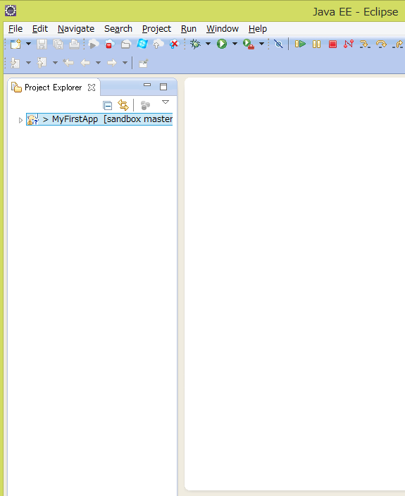これで、サンプルのplay frameworkのプロジェクトの作成とビルドが終わりました。この先は、Azure 用のプロジェクトを作成に入ります。
Azure 用のProjectの作成
ツールバーの New Windows Azure Deployment Project を押します。
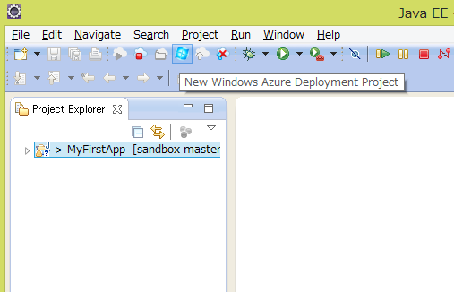New Windows Azure Deployment Projectの設定POPUPが開きます。Project Nameを入れます。今回は、MyAzureProjectにしました。例では、default locationを変更してplay frameworkのプロジェクトの横のディレクトリに持ってきていますが、プロジェクトの場所はどこでも構いません。
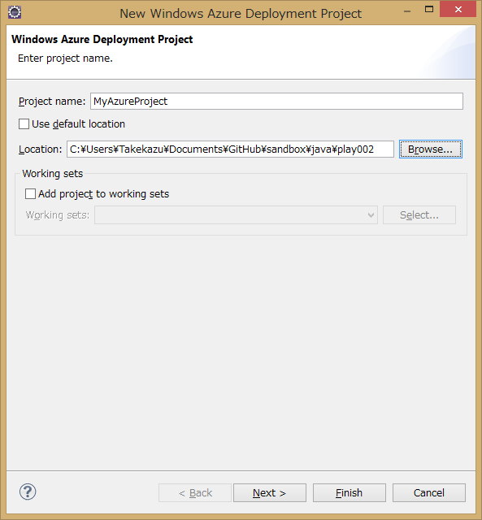Nextを押すと、JDKの設定に移ります。Emulator deployment と書いてある部分が、Emulatorを使った場合に利用されるJDKの設定で、Cloud deployment の部分がクラウド上（Azure環境）で使われるJDKの設定です。Deploy my local JDKを選択すると、Emulatorで使うように設定したものを自動的にCloudにアップロードしてクラウド上でも同じものを使うようになります。 今回は、ローカルのJDK 1.7を両方で使うように設定しています。この画面ではJDKの設定しかしません。SeverとApplicationは何も触らずにFinish のボタンを押します。
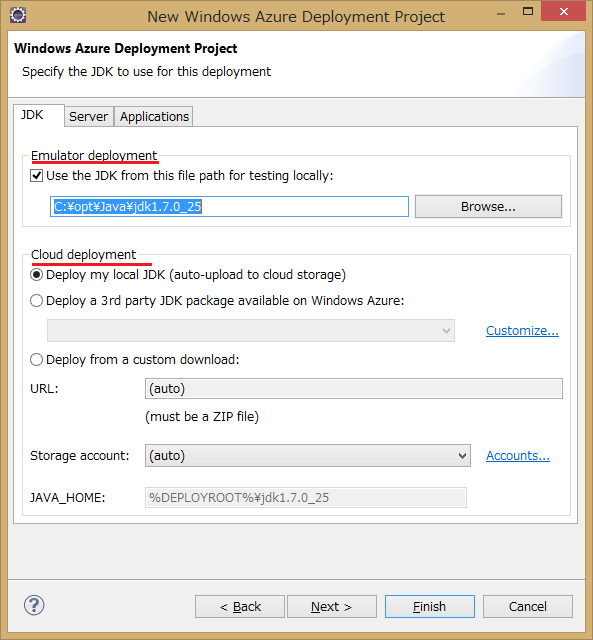下記のような内容のプロジェクトが作成されます。
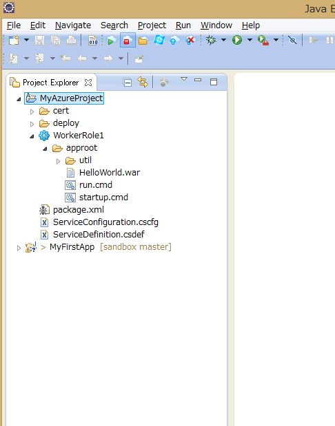プロジェクトのWorkerRole1へMyFirstAppのdist zipを追加する
WorkerRole1を選択してプロパティを開き、Windows Azure RoleのTreeを開いてComponentsを選びます。コンポーネントリストにHelloWorld.warがありますが、不要なのでremoveします。その後Addを押してMyFirstAppのdist zipを追加します。
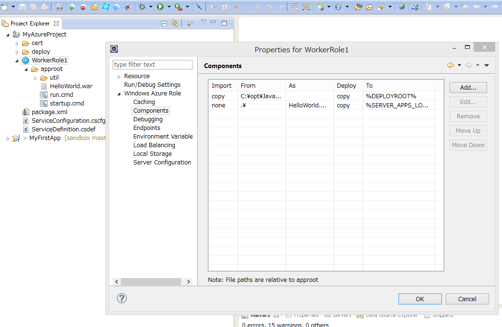「Windows Azure Role Component」のpopupをでは、Import into packageのFrom Pathの部分に、dist zip のフルパス名を入れます。Methodは、copyを選択、As Nameは、dist zipのファイル名入れます（ここは、From Pathのファイル名部分がデフォルトで入力されるはずです）その下の、Deploy from packageの設定は、Methodをunzip、To directoryを.にしてください。今回
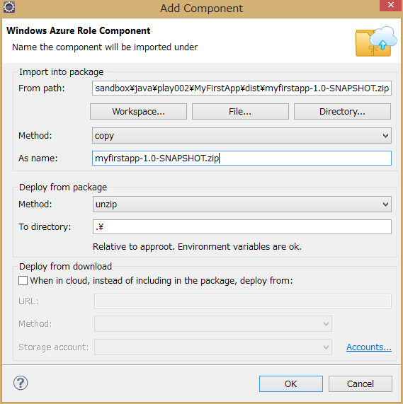環境変数の追加
dist zip名をRoleの実行タスクに渡す良い方法が無かったので、環境変数を使います。環境変数名ZIP_NAMEにdist zipのbase名(今回は、 myfirstapp-1.0-SNAPSHOT )を定義します。

EndPointを変更
play frameworkアプリのデフォルトの待ち受けポートが9000なので、EndPointを9000に変更します。publicで定義されているのがAzure のload brancer がインターネット上で公開しているポート番号で、privateがAzure インスタンスでアプリが待ち受けているポート番号です。play frameworkアプリのデフォルトの待ち受けポートが9000なので、EndPointを9000に変更します。Azure Load brancerがこの定義に基いてポート変換を実行します。
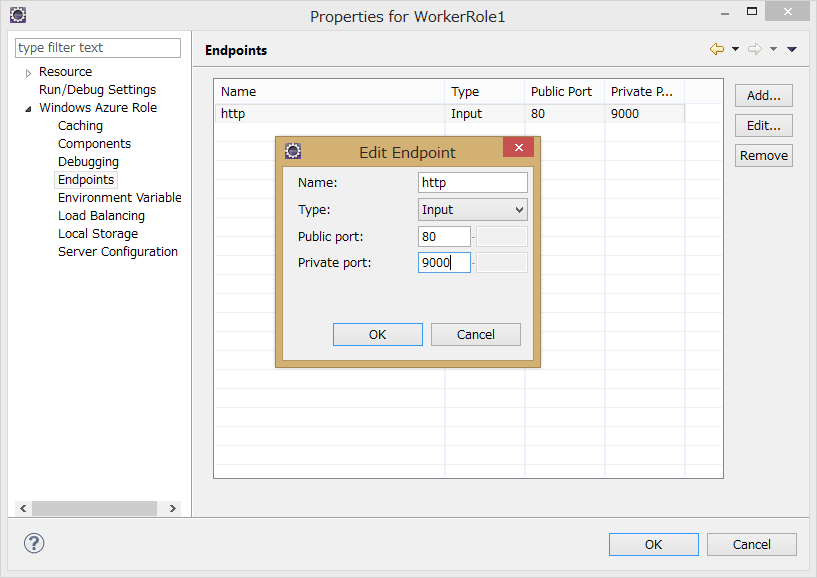scriptの変更
MyAzureProject/WorkerRole1/approotにあるstartup.cmdとrun.cmdを下記のように変更します。
startup.cmd:
del /q run_body.cmd
powershell -ExecutionPolicy RemoteSigned -f replace.ps1 run_body.cmd.template > run_body.cmd
run.cmd:
rem @ECHO OFF
set _SLEEPLENGTH=15000
set _FILENAME=run_body.cmd
@REM Create a temporary sleep script in VBScript
echo WScript.sleep(%_SLEEPLENGTH%) > %Temp%\_mysleep.vbs
:Loop
if exist %_FILENAME% (goto:StartToRun)
cscript /Nologo %Temp%\_mysleep.vbs
goto:Loop
del %Temp%\_mysleep.vbs
:StartToRun
call %_FILENAME%
replace.ps1と、run_body.cmd.templateの2つファイルを追加します。
replace.ps1:
cat $args[0] | % {$l = $_ -creplace '__JAVA_HOME__',"$Env:JAVA_HOME"; "$l" } | % {$l = $_ -creplace '__ZIP_NAME__',"$Env:ZIP_NAME"; "$l" }
run_body.cmd.template:
set JAVA_HOME=__JAVA_HOME__
set ZIP_NAME=__ZIP_NAME__
set PATH=%JAVA_HOME%\bin;%PATH%
setlocal
set d=%~dp0
set d=%d:\=/%
java %* -cp "%d%/%ZIP_NAME%/lib/*;" play.core.server.NettyServer %d%
Emulatorでの実行
これで準備ができました。 Run In Windows Azure Emurator` を押してEmulatorでの実行します。成功すると、80と9000のポートで結果を見ることができます。80はAzure SDKに付属のCompute Emulator経由で、9000はPlay Frameworkの待受を見ていることになります。また、EndPointの設定で80にしていますが、Compute Emulatorが起動時に、既に80が使われていた場合は順次ポート番号をインクリメントしていき空いているポートを利用します。
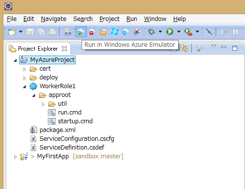Emulatorの管理画面が同時に起動します。Windows Azure Compute Emurator のウインドウを開いてWorkerRole1の0を選択すると、コンソール画面が表示されます。
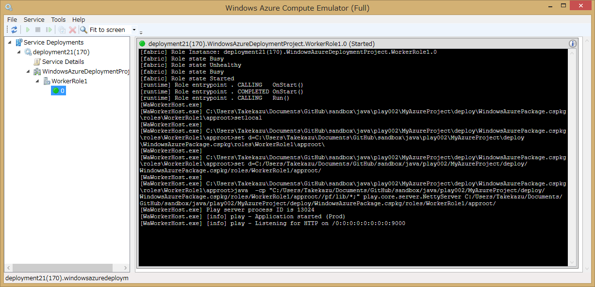Azure環境へのDeploy
Publish to Windows Azure Cloudを押してAzure環境にDeploy します。必要に応じて、StorageとCloud Serviceを作成してください。
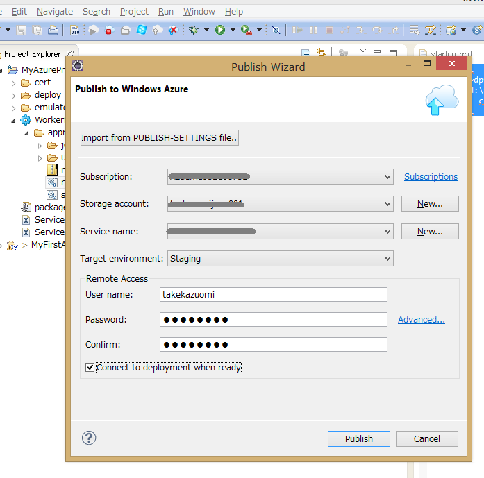この設定だと、Azure環境ではAzure LoadBarancerが介在して外部から port 80で見えます。